-
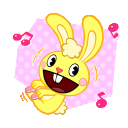
Cuddles
Cuddles is one of the main characters in Happy Tree Friends, and one of the four primary characters of the show, along with Giggles, Toothy and Lumpy. He's considered the original Happy Tree Friend.
-
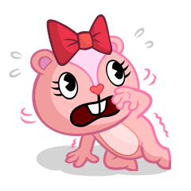
Giggles
Giggles is a pink warm-hearted female chipmunk who has a white diamond-shaped marking on her face, a white belly marking on her torso, and wears a big red bow on her head.
-
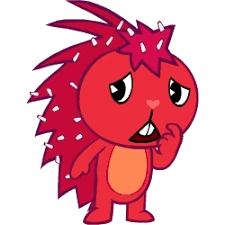
Flaky
Flaky is a red female porcupine whose quills are full of dandruff. She is a very cautious and timid character. She may also have a peanut allergy, necrophobia and possibly a fear of sharks.
-
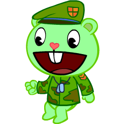
Flippy
Flippy is a green bear wearing dog tags and a green beret. He is a veteran in the Army. He fought in the Weaponized Animal Regiment (The W.A.R), and has an obsession with booby traps, as well as a flashback of being held captive
-
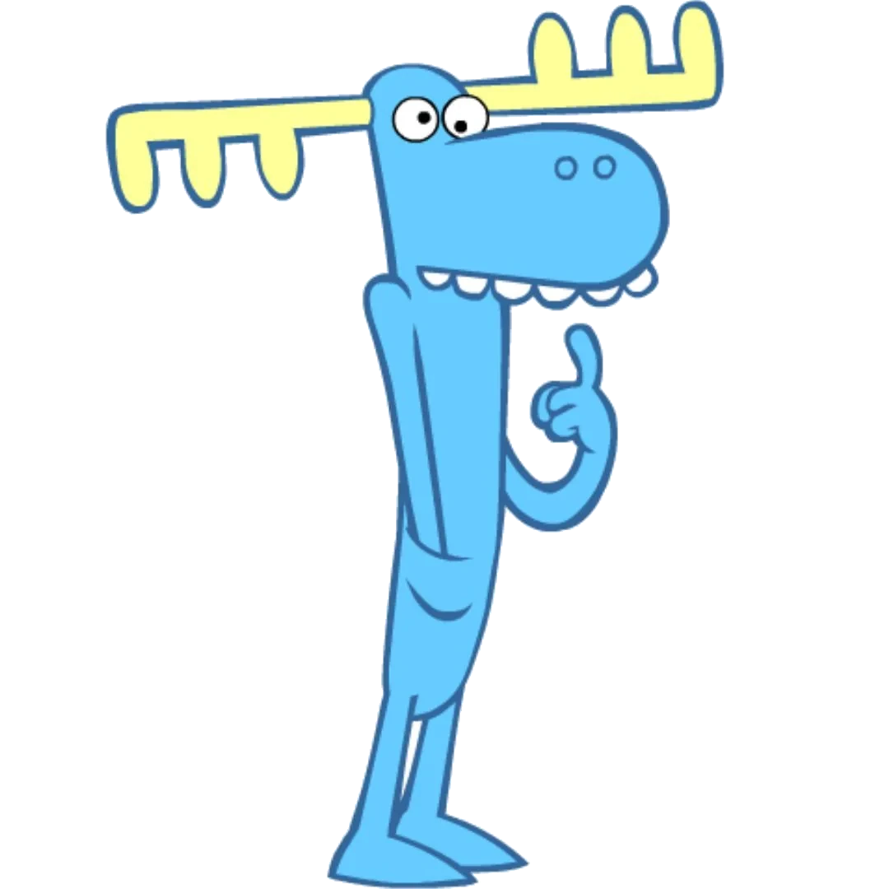
Lumpy
Lumpy is sometimes portrayed as the babysitter or caretaker for many of the other characters. He is also known to care for things other than his fellow tree friends, like his giant corn ear or his pet elephant.
-
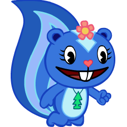
Petunia
Petunia is an indigo and navy blue female skunk with a sky-blue arrow marking on her forehead. She has an OCD and is generally very kind and polite however she can be quite sassy and rude at times.
-
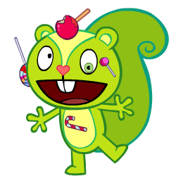
Nutty
Nutty is a lime male squirrel with a large curled-up tail that moves when he is excited. Nutty has a sweet tooth: he has an addiction to sugar and anything that contains it, particularly candy.
-
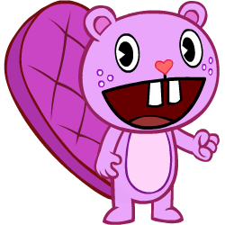
Toothy
Toothy is a purple beaver with a big heart named for his large, gapped buckteeth. Toothy is one of the four "original" Tree Friends and is most often played as the everyman.
-
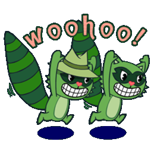
Lifty and Shifty
They are a pair of green anthropomorphic raccoons who are also kleptomaniacs, meaning they will steal anything that isn't nailed down (even the stuff that is nailed down).
-
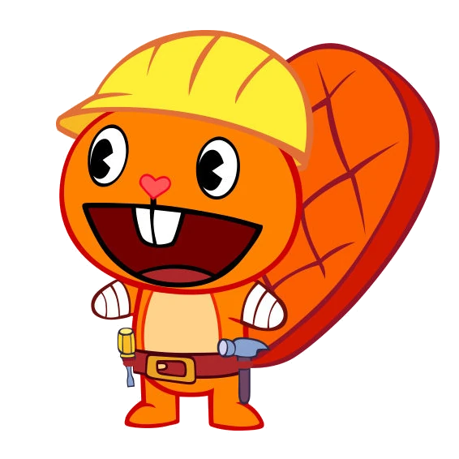
Handy
He is an orange beaver with amputated arms and often pulls a signature groan and frown whenever he realizes or annoyed. He wears a tool belt and a yellow worker's helmet and his stumps are covered with bandages.
-
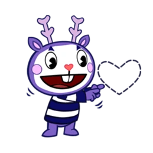
Mime
Mime is a purple male deer with pointy ears and antlers who wears face paint and a navy blue/dark purple and white striped shirt. Because he is a mime, he does not speak, causing others to have trouble understanding him as result.
-
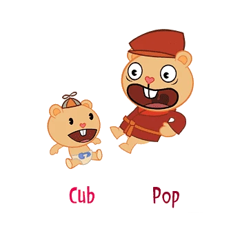
Pop and Cub
Pop, the fatherly bear, teaches everyone that there’s always room for “inability” in parental “responsibility”. Cub is innocent and cute. Pop has his hands full trying to keep this ‘lil tyke from crawling into trouble.
-
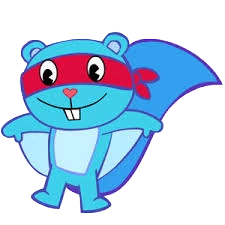
Splendid
He's a flying squirrel. This hero of the skies is always ready to swoop in for the rescue. Not knowing his own strength, he always does more wrong than right.
-
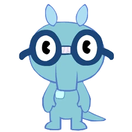
Sniffles
Sniffles is a light blue anteater who wears glasses that have been taped in the middle and a pocket protecter. Despite being intelligent, he sometimes lack common sense. He craves for ants but gets injured and tortured by them.
-
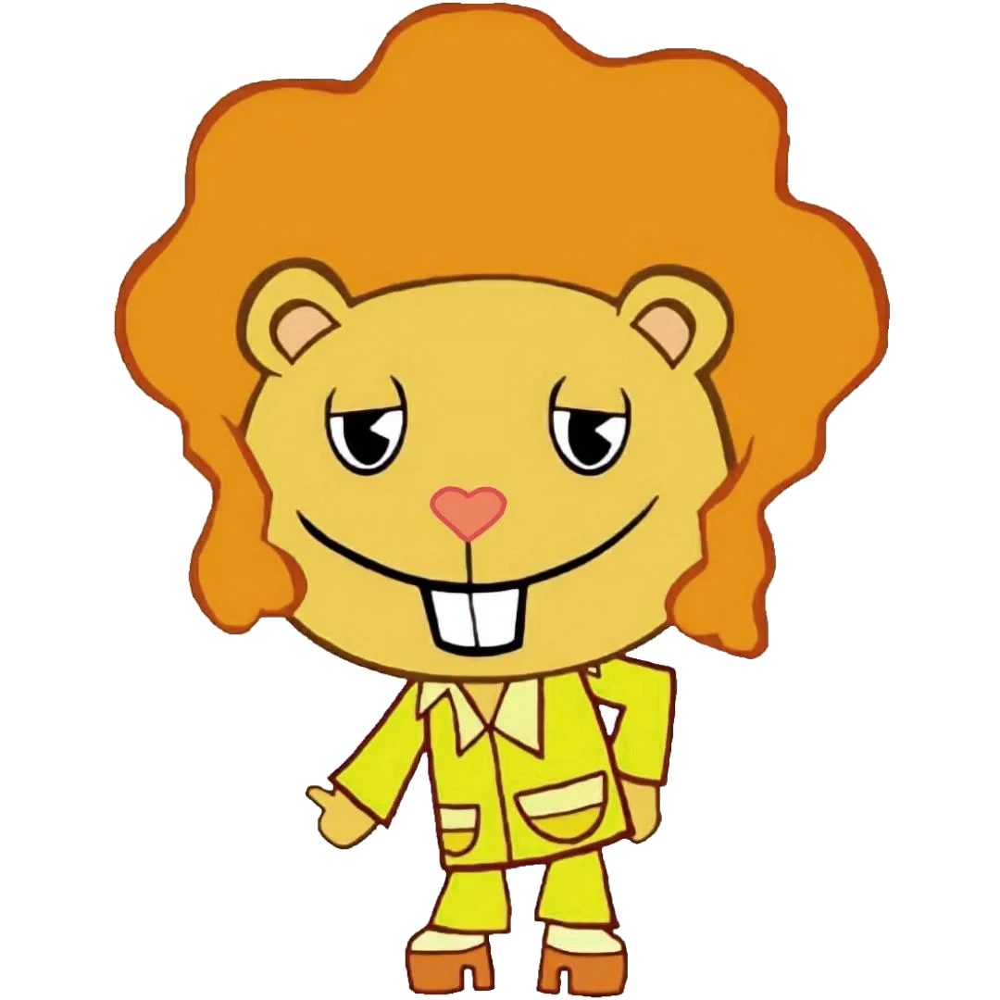
Disco Bear
Disco Bear is a golden bear with an orange afro and two sideburns who likes to dance to disco music. He wears 1970s style clothing. His main catchphrase is "Oh yeah!"
-
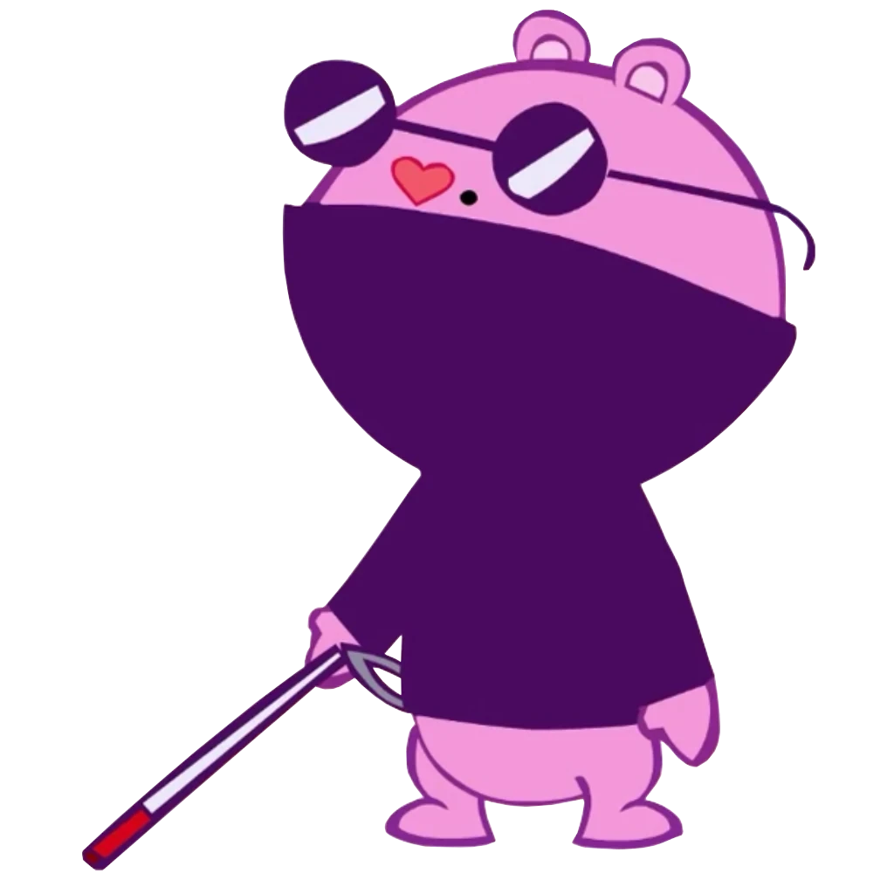
The Mole
The Mole is a blind neon pink unknown mole who wears sunglasses and a dark turtle neck sweater, with a mole on his face. His blindness drives the plot for many times, he and Lumpy are the most inept for any given job.
-
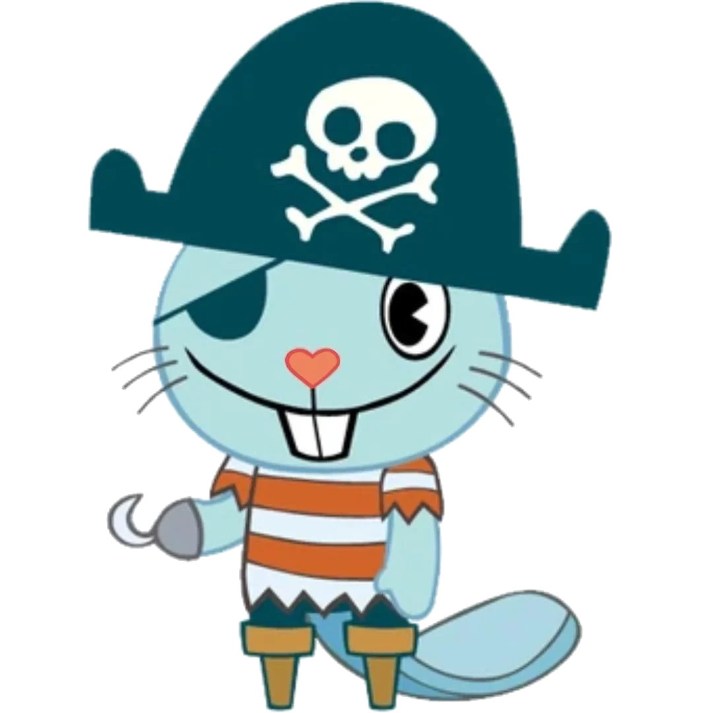
Russel
Russell is an anthropomorphic sea otter pirate, who owns typical pirate accessories, such as a Jolly Roger hat, a hook, an eye-patch, and two wooden peg-legs. He enjoys fishing, sailing, and eating seafood, especially mussels.